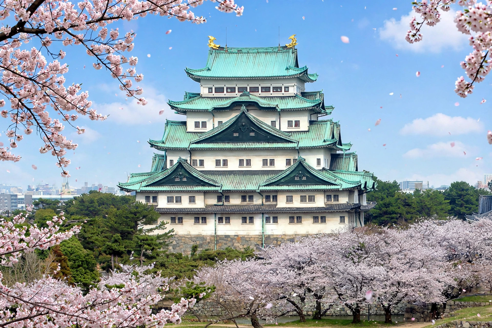

| Nagoya Castle | |
|---|---|
| Location | Naka-ku, Nagoya, Aichi Prefecture, Japan |
| Built | 1610–1619 |
| Built by | Tokugawa Ieyasu; Owari Tokugawa clan |
| Height | Main keep 48 m (with stone base) |
| Symbol | Golden shachihoko (kinshachi) |
Nagoya Castle (名古屋城, Nagoya-jō) is a Japanese castle located in Nagoya, Japan. Tokugawa Ieyasu ordered its construction in 1610 as the seat of the Owari branch of the Tokugawa clan and a stronghold guarding the Tōkaidō road between Edo and Kyoto. The castle is famous for the pair of golden shachihoko (tiger-headed dolphins, kinshachi) on its roof, a symbol of the city of Nagoya.

Construction drew on the labour of twenty daimyo of western Japan, who quarried and carried the great stones of the walls (some still bear their family crests). The five-storey main keep and the Honmaru Palace were completed by 1619. The palace, a masterpiece of shoin-zukuri architecture with celebrated painted screens, served as the Owari lords' residence. The castle survived the Meiji restoration, served as an Imperial villa and army headquarters, and was designated a National Treasure in 1930 — the first castle so designated.
On 14 May 1945, American firebombing destroyed the keep and palace, though the golden shachihoko survived with scorching and most paintings had been removed for safekeeping. The keep was rebuilt in 1959 in ferro-concrete as a museum. The Honmaru Palace was reconstructed using traditional materials and techniques from surviving plans and photographs, opening in stages from 2013 and fully in 2018. Because the concrete keep no longer meets earthquake standards, Nagoya city has pursued plans to rebuild the main keep in wood, though the project has faced delays and debate over accessibility.
Japanese castle · Tokugawa Ieyasu · Nagoya · Nagoya Protocol